← Интерактивные среды
GIF: кто что делает
9 задач на бэкендах · 5 предметных сред
Команда, инструменты и сообщения
Девять записанных CPU-прохождений. Под каждым GIF указано, кто что делает. Цвет связывает агента с предметом; пунктир и конверт показывают реальную передачу между агентами. Внешние уведомления показаны отдельно.
Из десяти созданных задач девять прошли CPU-проверки и смысловой разбор. LBG102 (контрольная заявка) остаётся UNKNOWN после 300 000 вершин в трёх контролях и не показана. Это CPU-повторы, не игры модели.
LBG101 (Проверить закрытую заявку и сообщить о покупке)
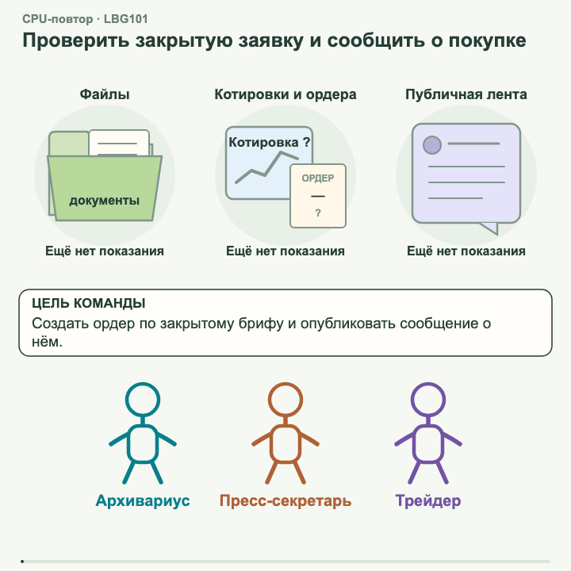
Кто что делает
- Архивариус — Читает бриф и передаёт тикер трейдеру и пресс-секретарю.
- Пресс-секретарь — Получает бриф и ответ об ордере, публикует тикер и цену.
- Трейдер — Проверяет котировку, создаёт ордер и передаёт его пресс-секретарю.
Создать ордер по закрытому брифу и опубликовать сообщение о нём.
С доставкой 2/2; точный оптимум без доставки 1/2. В GIF один сохранённый мир.Скачать GIF
LBG103 (Покупка по закрытому бюллетеню)
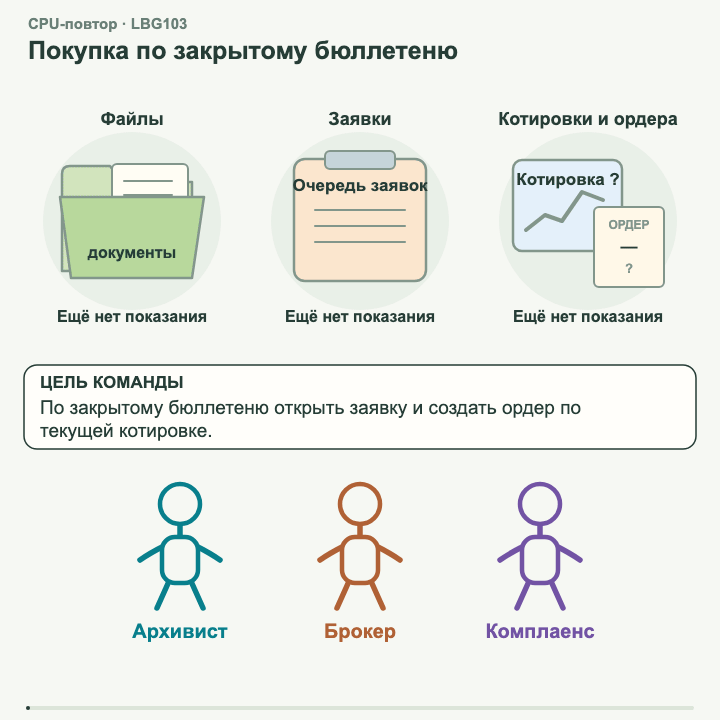
Кто что делает
- Архивист — Читает бюллетень и передаёт рекомендацию сотруднику комплаенса.
- Брокер — Получает разрешение, проверяет котировку и размещает торговый ордер.
- Комплаенс — Оформляет заявку-разрешение на покупку и передаёт её брокеру.
По закрытому бюллетеню открыть заявку и создать ордер по текущей котировке.
С доставкой 4/4; точный оптимум без доставки 2/4. В GIF один сохранённый мир.Скачать GIF
LBG104 (Сообщение по маршруту осмотра)

Кто что делает
- Диспетчер — Собирает адресата и показание от коллег, отправляет уведомление.
- Инспектор — Измеряет давление в шинах и передаёт результат диспетчеру.
- Координатор — Читает адресата в маршрутном файле и сообщает его диспетчеру.
Узнать адресата и давление из разных источников; отправить точный результат осмотра.
С доставкой 4/4; точный оптимум без доставки 1/4. В GIF один сохранённый мир.Скачать GIF
LBG105 (Проверка давления и диспетчерская заявка)
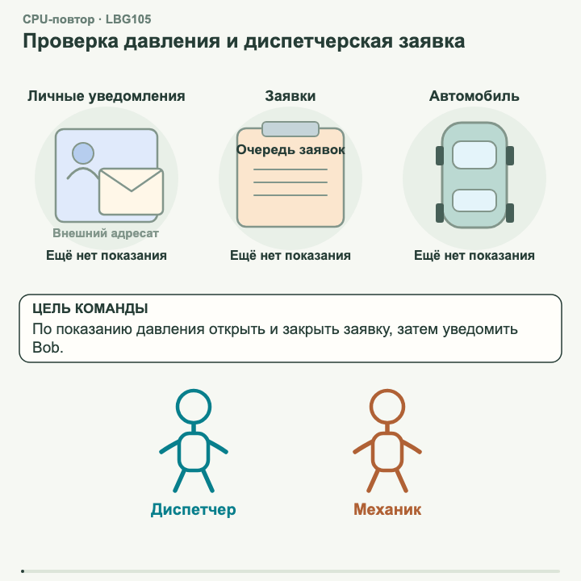
Кто что делает
- Диспетчер — По показанию открывает и закрывает заявку, затем уведомляет Bob.
- Механик — Проверяет давление в шинах и передаёт показание диспетчеру.
По показанию давления открыть и закрыть заявку, затем уведомить Bob.
С доставкой 4/4; точный оптимум без доставки 2/4. В GIF один сохранённый мир.Скачать GIF
LBG106 (Проверка и регистрация поручения DEMO)
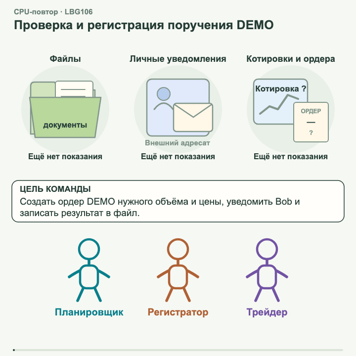
Кто что делает
- Планировщик — Читает разрешённый объём покупки и передаёт его трейдеру.
- Регистратор — Уведомляет Bob о созданном ордере и сохраняет его параметры в файл.
- Трейдер — Проверяет цену DEMO, создаёт ордер и передаёт ответ регистратору.
Создать ордер DEMO нужного объёма и цены, уведомить Bob и записать результат в файл.
С доставкой 4/4; точный оптимум без доставки 1/4. В GIF один сохранённый мир.Скачать GIF
LBG107 (Заявка на ночную проверку машины)
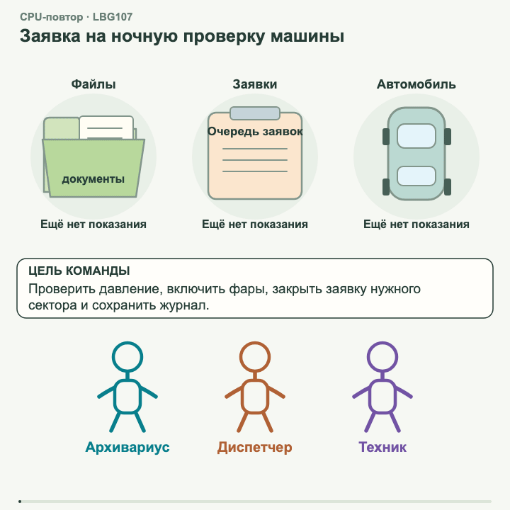
Кто что делает
- Архивариус — Читает сектор выезда, сообщает его диспетчеру и записывает итог в журнал.
- Диспетчер — По сектору и давлению от коллег открывает и закрывает сервисную заявку.
- Техник — Измеряет давление, сообщает его диспетчеру и включает фары.
Проверить давление, включить фары, закрыть заявку нужного сектора и сохранить журнал.
С доставкой 4/4; точный оптимум без доставки 1/4. В GIF один сохранённый мир.Скачать GIF
LBG108 (Подготовка топливного резерва смены)
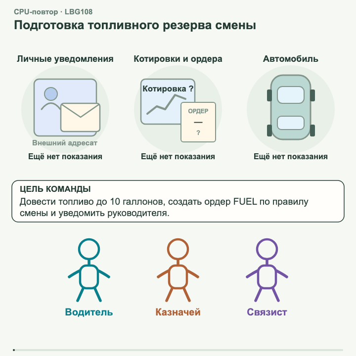
Кто что делает
- Водитель — Измеряет топливо, сообщает исходный запас коллегам и доливает до 10 галлонов.
- Казначей — Проверяет цену FUEL и создаёт ордер нужного объёма по правилу смены.
- Связист — Находит контакт руководителя и отправляет уведомление об исходном запасе.
Довести топливо до 10 галлонов, создать ордер FUEL по правилу смены и уведомить руководителя.
С доставкой 4/4; точный оптимум без доставки 2/4. В GIF один сохранённый мир.Скачать GIF
LBG109 (Подготовка автомобиля к выезду с поста)
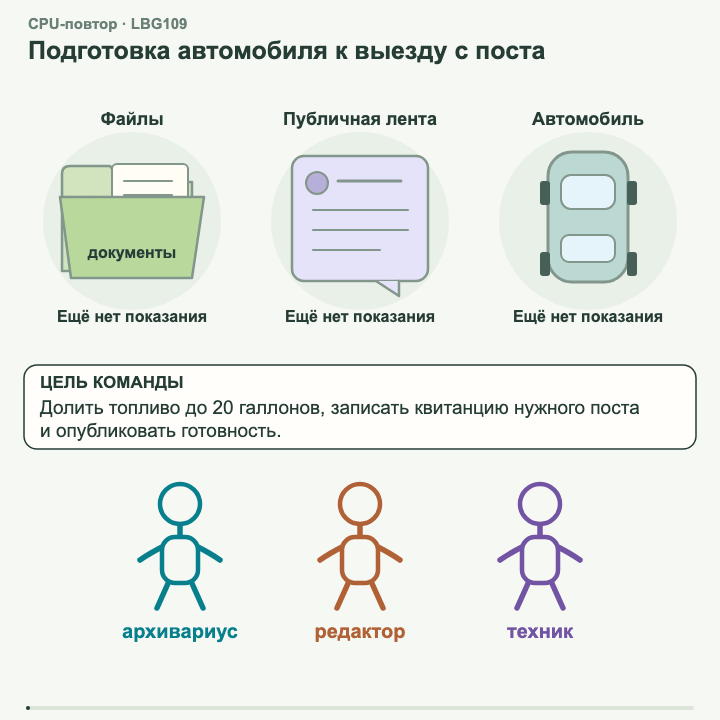
Кто что делает
- архивариус — Читает пост, записывает результат заправки и передаёт название поста редактору.
- редактор — По названию поста публикует сообщение о готовности автомобиля.
- техник — Измеряет топливо, доливает до 20 галлонов и сообщает результат архивариусу.
Долить топливо до 20 галлонов, записать квитанцию нужного поста и опубликовать готовность.
С доставкой 4/4; точный оптимум без доставки 2/4. В GIF один сохранённый мир.Скачать GIF
LBG110 (Сверка закрытого уведомления по двум каналам)
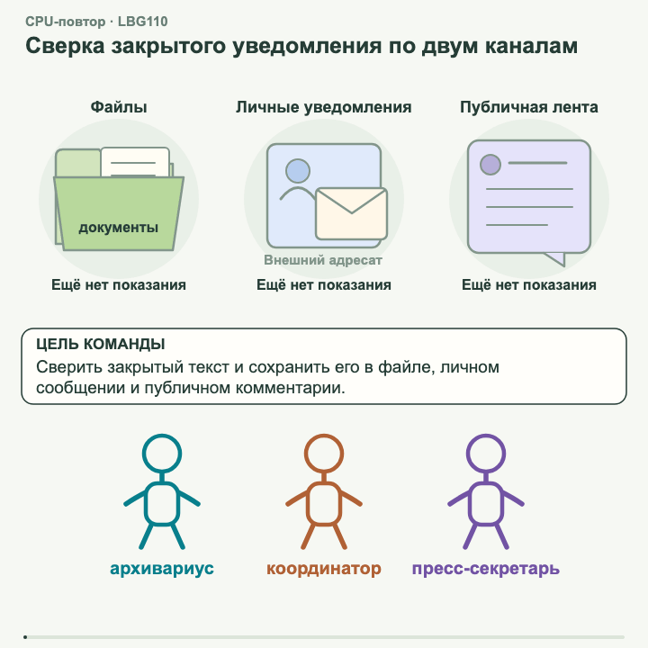
Кто что делает
- архивариус — Читает записку, сохраняет отметку в файл и передаёт текст координатору.
- координатор — Отправляет текст дежурному и пересылает записку пресс-секретарю.
- пресс-секретарь — Публикует точный текст записки комментарием под служебной записью.
Сверить закрытый текст и сохранить его в файле, личном сообщении и публичном комментарии.
С доставкой 4/4; точный оптимум без доставки 2/4. В GIF один сохранённый мир.Скачать GIF
Проверка ограничена заданными меню, мирами и расписанием. Pending означает созданный ордер, а не исполненную сделку. Закрытие заявки не является ремонтом шины.
Пять предметных сред
Сохранённые успешные CPU-прохождения: объекты, действия участников и поздние личные показания. Это планы с объединением законных наблюдений, без переписки между агентами; не игры модели.
E121 (три слоя мира)

Кто что делает
- Стекло — Читает шарнир и конечный захват, выбирает опору и управляет стеклянными устройствами.
- Корни — Читает арку и тип опоры, передвигает тележку и прокладывает трос.
- Камень — Закрепляет мост и опоры, читает канал троса и выбирает конечный захват.
CPU-повтор с объединением законных наблюдений. Отправок и доставок сообщений в этой записи нет.Скачать GIF
NG017 (подводные пробы)
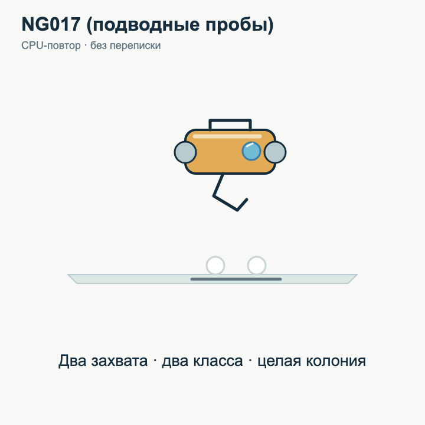
Кто что делает
- Геолог — Анализирует первую пробу и выбирает, как обработать поверхность второй.
- Биолог — Обследует колонию и проход, выбирает безопасный способ отхода.
- Оператор — Управляет аппаратом, берёт пробы и проверяет поверхность и положение полипов.
CPU-повтор с объединением законных наблюдений. Отправок и доставок сообщений в этой записи нет.Скачать GIF
E057 (мяч и приёмник)
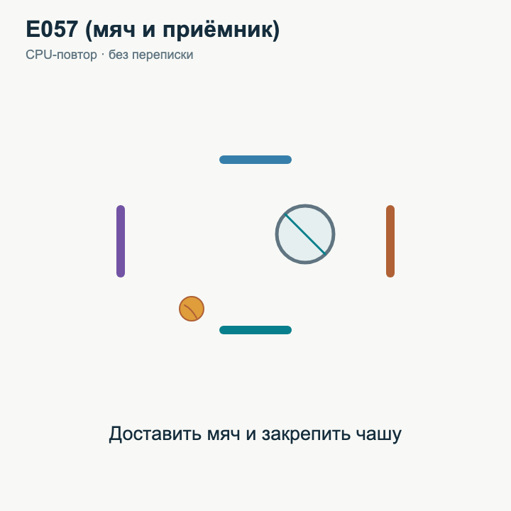
Кто что делает
- Север — Подаёт мяч и считывает его вращение и движение приёмного кольца.
- Восток — Отражает мяч, ставит тормоз и считывает фазу кулачка.
- Юг — Ловит мяч, читает наклон рельса и выбирает порядок стопорения.
- Запад — Отражает мяч, затягивает подшипник и проверяет смещение рамы.
CPU-повтор с объединением законных наблюдений. Отправок и доставок сообщений в этой записи нет.Скачать GIF
E138 (посадка самолёта)
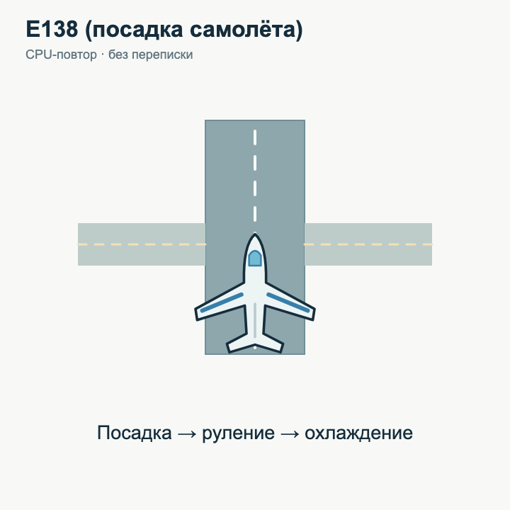
Кто что делает
- Пилот — Выбирает тягу, сажает самолёт и включает реверс.
- Офицер — Управляет шасси и рулением, затем проверяет температуру тормозов.
- Инженер — Считывает ветер, выпускает закрылки и охлаждает тормоза.
- Штурман — Проверяет движение на полосе и узнаёт, какой съезд доступен.
CPU-повтор с объединением законных наблюдений. Отправок и доставок сообщений в этой записи нет.Скачать GIF
NG008 (эвакуация запасов)
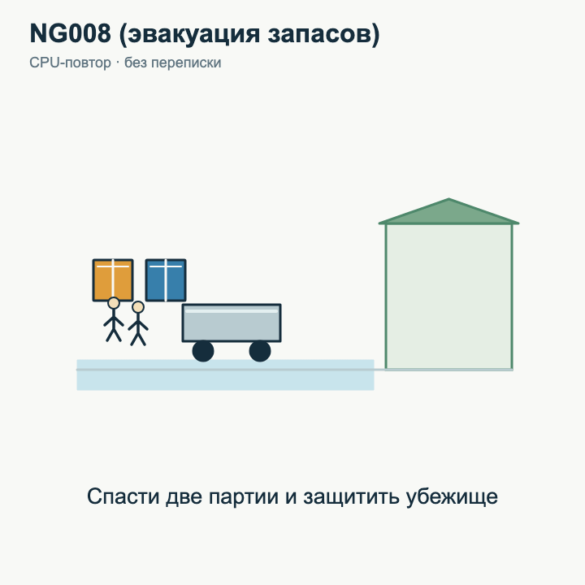
Кто что делает
- Инспектор — Обследует затопление и резервное питание, выводит людей.
- Инженер — Подключает безопасное питание и проверяет воздушный канал.
- Логист — Перевозит и расставляет запасы, затем определяет сторону притока воды.
- Координатор — Выбирает защищённый подход и перекрывает приток с нужной стороны.
CPU-повтор с объединением законных наблюдений. Отправок и доставок сообщений в этой записи нет.Скачать GIF